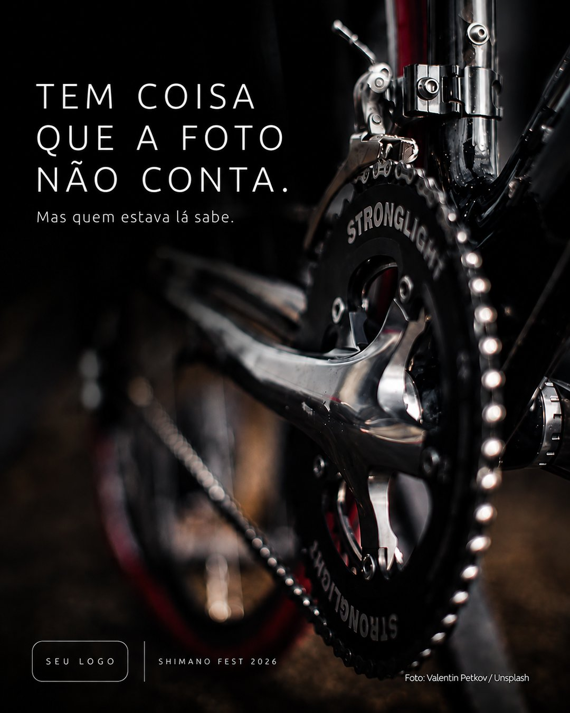
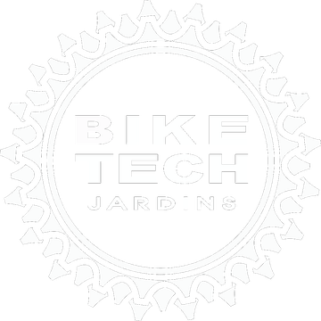

Cinco postagens prontas em 48 horas, a partir do material que você captar no seu estande.
Você volta da feira com o celular cheio. Foto do estande, vídeo de produto, gente falando da sua marca.
E volta com a semana cheia também. Pedido atrasado, orçamento parado, lojista cobrando prazo.
Na prática o material fica no celular até sobrar tempo de publicar.
E não sobra. Sai um carrossel de agradecimento e olhe lá.

Exemplo. Peça demonstrativa feita sobre uma foto comum de bicicleta, para mostrar o acabamento. O espaço de logo é da sua marca. Nas suas cinco postagens entram as suas fotos e o assunto do seu estande. Foto: Valentin Petkov / Unsplash.

Três marcas contam uma história.
O próximo capítulo, quem escreve, é a
Do balcão à mídia. Do Brasil aos Estados Unidos.
Cinco postagens prontas.
Entrega em 48 horas.
Você recebe o arquivo pronto e publica onde quiser.
Condição para material captado na Shimano Fest.
Toquei a loja Bike Tech Jardins por 19 anos. Sei bem como é a semana depois de uma feira.
Se preferir email: caetano@iaieu.com
Se você precisar de alguma coisa antes, ainda durante os dias de feira, é só chamar.